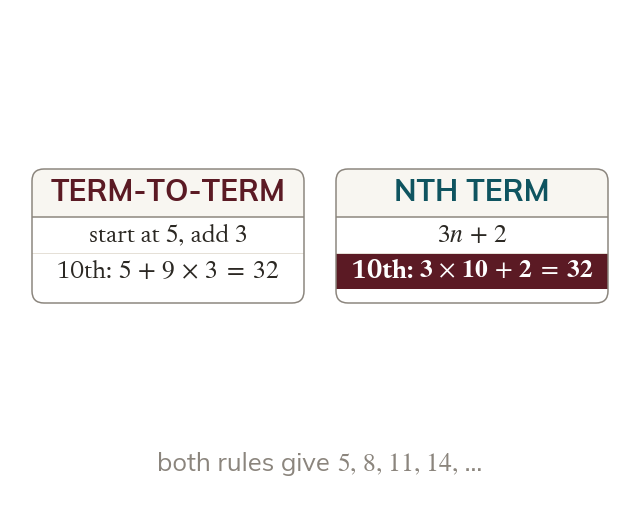
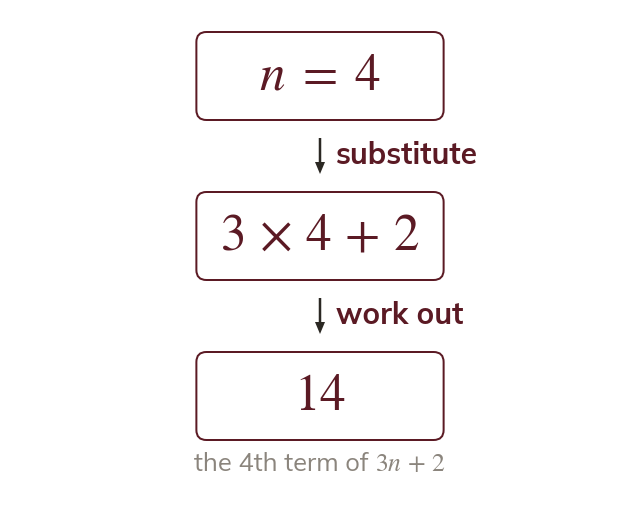
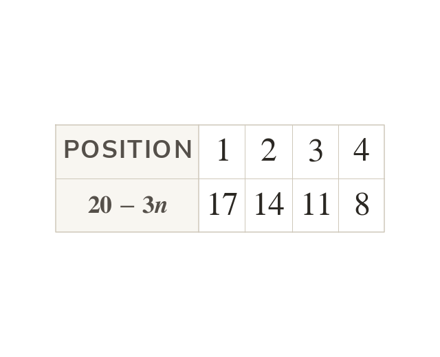
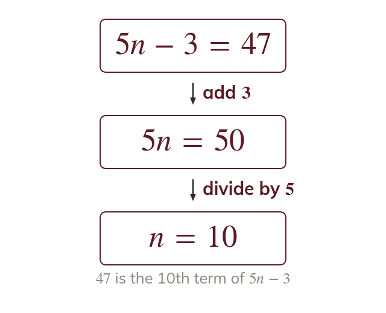
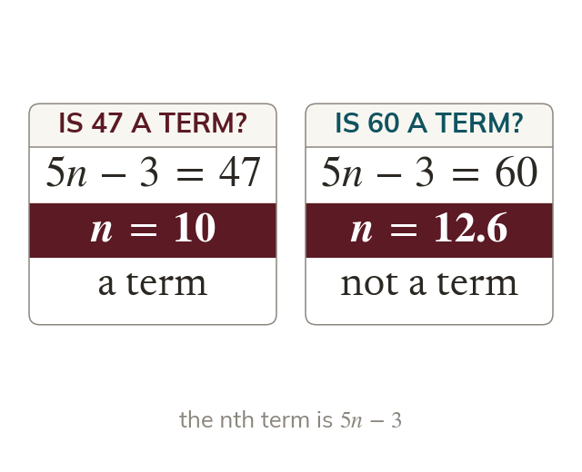
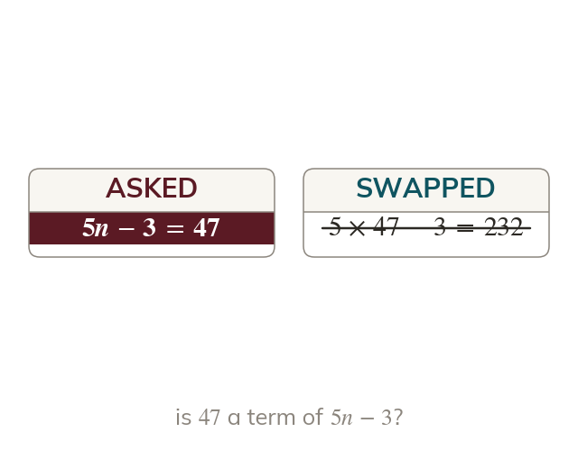

Two kinds of rule
A term-to-term rule needs the term before. The nth term jumps straight to any position.
An nth term jumps straight to any term of a sequence, the 100th as easily as the 3rd. Read backwards, it tells you whether a number belongs to the sequence at all.
Work down the page at your own pace. Write every answer in your book first, then click to check it.
Read each card, then follow the worked examples one step at a time.

A term-to-term rule needs the term before. The nth term jumps straight to any position.

The position n goes into the nth term. The term comes out.

A rule with falls by at every step. Its terms decrease.
Pick an answer. If it's wrong, the feedback tells you which mistake it was.
Read each card, then follow the worked examples one step at a time.

Setting the nth term equal to a number makes an equation in n. Solving it gives the number's position.

A position must be a positive whole number. Any other answer means the number is not a term.

The number tested goes where the term is, never in place of n. Substituting it answers a different question.
Pick an answer. If it's wrong, the feedback tells you which mistake it was.
Finished? Next lesson: 10H.1.2 Finding the nth Term.
For each skill, tap the one that is true for you today. Your Revise pages start with anything you mark Not yet.
Your ratings are saved on this device only.
Log in, then search for a code to practise that skill.
Videos, worksheets and more on each part of this lesson.